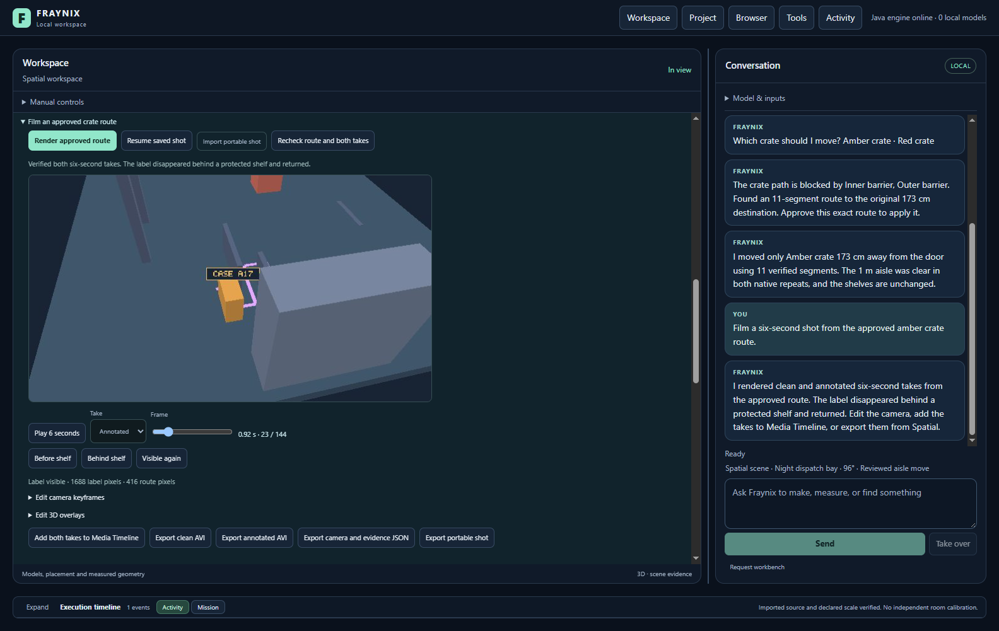
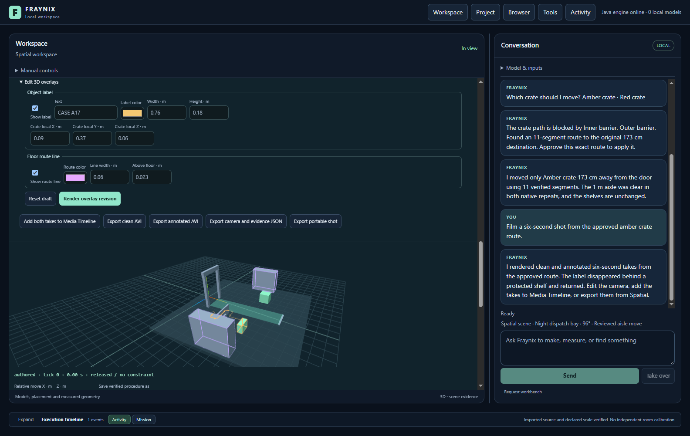
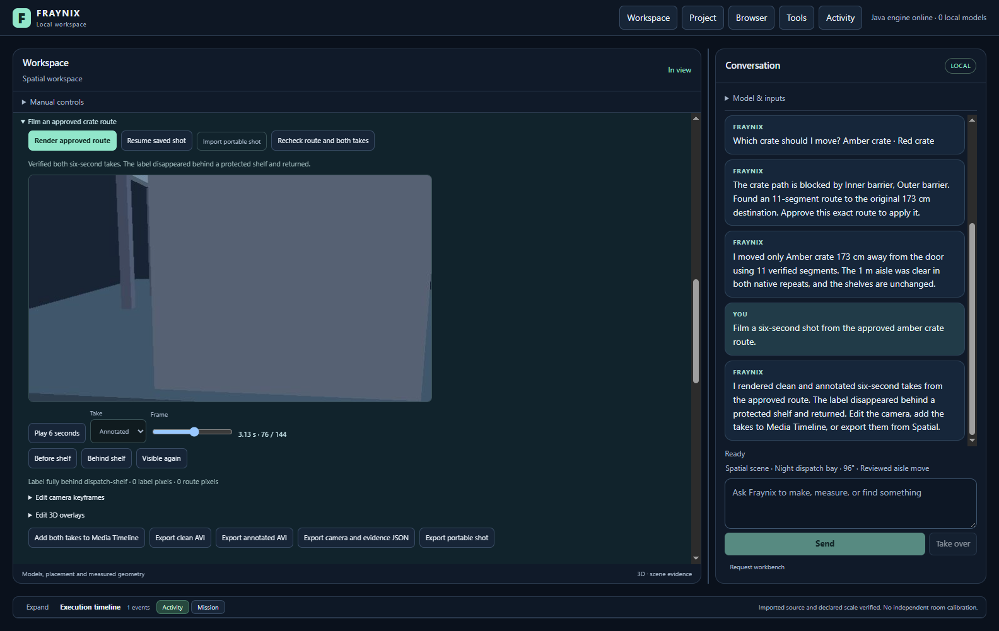
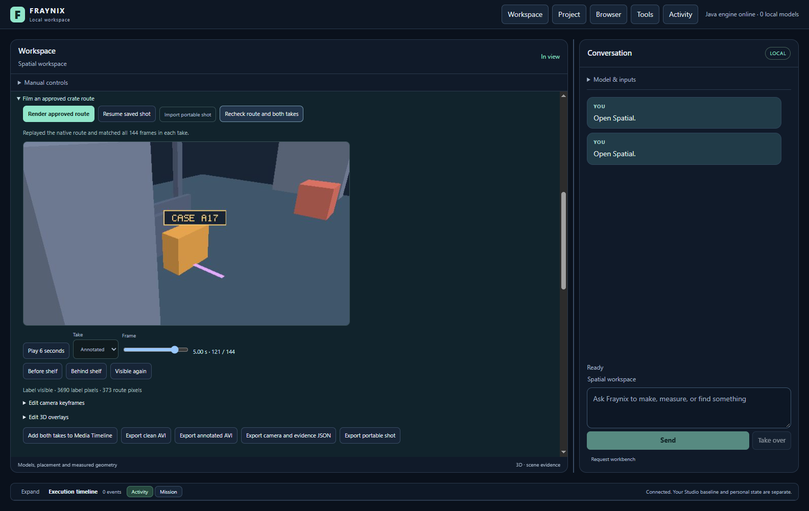

Edit 3D overlays and verify a portable shot
Film the amber flight case, edit its label and floor route, and verify both takes in a separate offline project.

The amber case, object label, floor route and dispatch shelf

The saved label and route settings in the Spatial editor

A verified frame where the shelf hides both overlays

The label returns in the clean recipient project after restart
System files
Open source